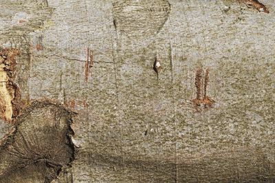

Trees are at the mercy of threats since they obviously can’t just get up and run away. However, having said that, trees are far from defenseless. Different species of trees have developed a variety of ways to protect, guard, and preserve their well-being. Some of these tactics are easily recognizable to us while others are just being understood. Aside from our skin, it is our immune systems that really help us fend off diseases. As far as researchers are aware of up until now, trees do not have an immune system to speak of. Therefore, having a good defense mechanism is specifically important to trees. These are just a few that tree companies in Monmouth County are aware of.
A Trees First Defense is Obvious
We are all familiar with the most obvious defense mechanism of trees. It is the thick, touch outer covering of the trunk. The bark of a tree is its first line of defense. Bark, just like our skin, helps prevent many infections and infestations simply by being a barrier between threats and the inner workings of the tree.

On one hand, there are smooth bark trees. The smoothness of their exterior surface greatly inhibits an insect’s ability to stick to and climb these trees. It also greatly deters invasive plants like ivy and other climbing vines. Examples of NJ smooth bark trees that tree companies in Monmouth County are familiar with are beech and birch. In order to maintain a smooth surface, these trees grow very slowly. This is relevant to tree care services because it takes these trees much longer to heal from an injury like a limb removal.
Rough bark trees, on the other hand, sometimes start as smooth barked as saplings and grow to have rough bark as a mature tree. In contrast to smooth bark trees, rough bark trees are capable of faster recovery after an injury. This is important to know for tree companies in Monmouth County because the ability of a tree to heal greatly impacts our pruning and limb removal process. Oak and Maple trees both have rough bark.
Thorns, Spines, and Prickles are Well-Known to Tree Companies in Monmouth County
When it comes to defenses, none are quite as recognizable and wide-spread throughout nature as thorns. Also referred to as spines, these pointy appendages are used to deter animals from feeding on the plant. Even though some pests can sneak past a wall of spikes, the amount of predator attacks they do deter easily counteracts the energy spent to grow and maintain them. Roses, cacti, and holly trees are all plants that have pointy protuberances as a defense mechanism.
It has also been shown that appendages like spines and thorns can protect the plant in other ways. For one, spines help defend the plant from extreme temperatures by providing shade. One well known example of this cacti. One spike may not have a big impact, but tens of thousands of spikes really can. Furthermore, this helps to slow water loss through evaporation.
Chemical Warfare is More Common Than You Think
It may seem like science fiction to say that trees defend themselves with chemical warfare. Most people are aware of at least one type of poisonous plant. Poison ivy comes to mind first most likely. But, while the urushiol oil is highly irritating to human skin, birds can eat the berries of poison ivy with no problem. This type of defense certainly has some holes in it.
Another, and perhaps better, example of plants using a chemical defense cell called an idioblast. When these cells are punctured, as will happen when a predator bites the plant, crystals of calcium oxalate are released. This can irritate and sometimes poison the attacker forcing them to leave the plant alone.
Communication Builds Defenses
Unbeknownst to us, trees are actually communicating with each other. It has been discovered that trees, even those of different species, send and receive messages through a fungal network called mycorrhizal networks. The very thin strands that exist at the end of a root system combine with structures of the fungus to form a symbiotic relationship. This means that both parties’ benefit from the partnership. Trees are able to send nutrients and messages to other trees and for the service, the fungus takes its payment in the form of sugar. This communication chain is especially helpful for saplings and sick trees.